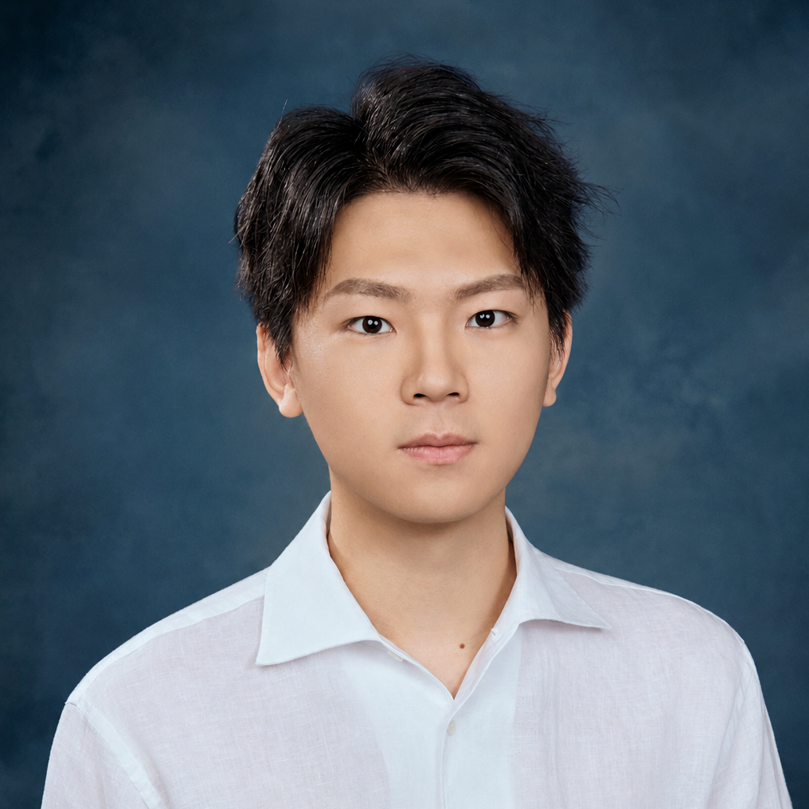

2024—Present
Education
University of Pennsylvania
Ph.D. in Electrical and Systems Engineering
Philadelphia, PA · Advisor: Prof. Shirin Saeedi Bidokhti ↗ (opens in a new tab)

I am a Ph.D. student in Electrical and Systems Engineering at the University of Pennsylvania, advised by Prof. Shirin Saeedi Bidokhti (opens in a new tab) . My research connects information theory with modern machine learning, with an emphasis on compression in the low rate regime.
I am especially interested in the fundamental limits of different compression scenarios, including rate--distortion--perception trade-offs, LLM-based semantic compression, and foundations of neural compression.
Education
Ph.D. in Electrical and Systems Engineering
Philadelphia, PA · Advisor: Prof. Shirin Saeedi Bidokhti ↗ (opens in a new tab)
Research internship
Research Intern, Yale University
New Haven, CT · Advisor: Prof. Leandros Tassiulas ↗ (opens in a new tab)
Education
B.Eng. in Electronic Information Science and Technology
Beijing, China · Advisor: Prof. Jintao Wang ↗ (opens in a new tab)

Proceedings of the 2026 IEEE International Symposium on Information Theory (ISIT), pp. 1-6
IEEE ISIT Student Travel Grant
Accepted for presentation at the 2026 IEEE Information Theory Workshop (ITW)
IEEE ITW Travel Grant
In preparation for the 2027 IEEE International Conference on Acoustics, Speech, and Signal Processing (ICASSP)
Accepted for presentation at the 2026 Asilomar Conference on Signals, Systems, and Computers (ACSSC)
IEEE ISIT Student Travel Grant
IEEE ITW Travel Grant
Ganster Fellowship, University of Pennsylvania
Tsinghua Comprehensive Excellence Award (Tsinghua-Toyota Scholarship)
Tsinghua Comprehensive Excellence Award (Tsinghua-Toyota Scholarship)
Tsinghua Academic Excellence Award